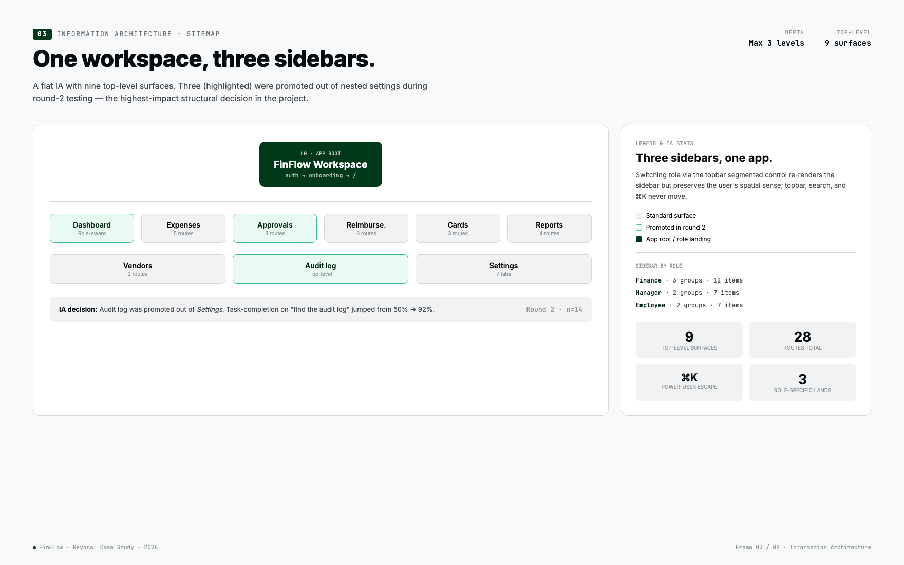
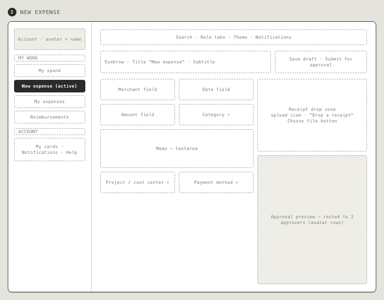
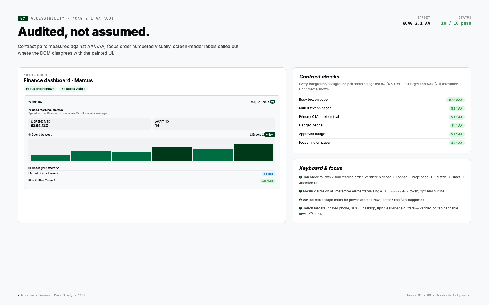
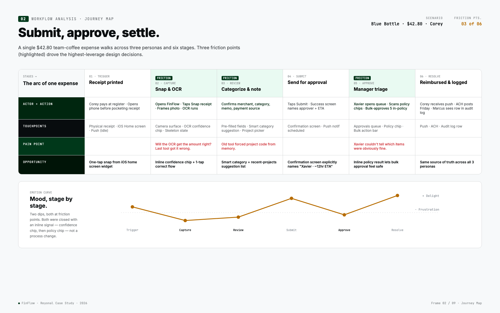
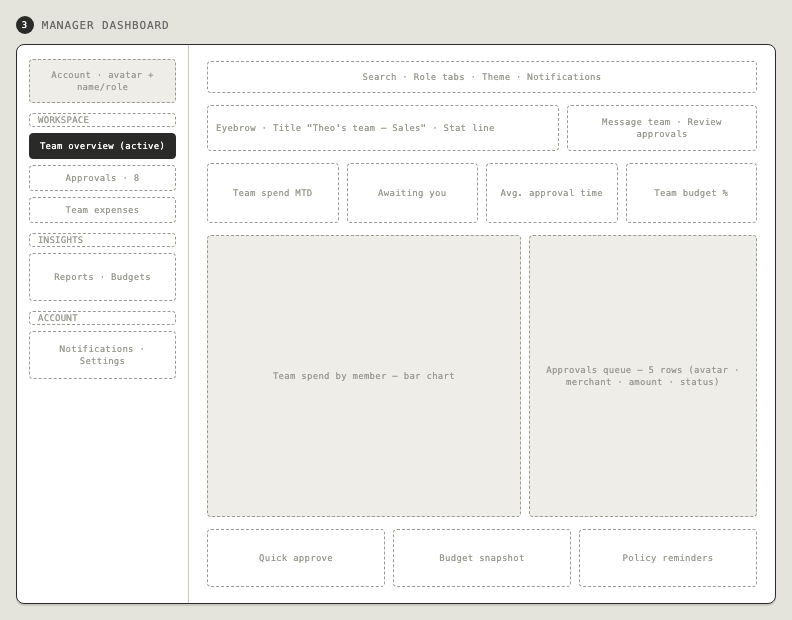
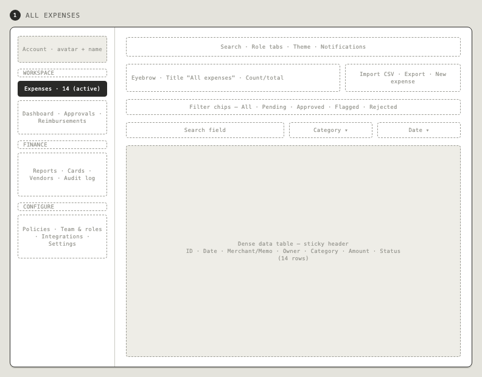
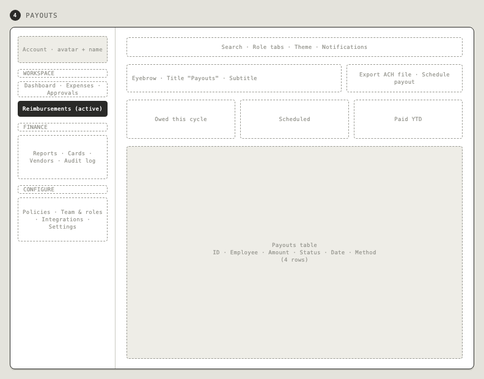
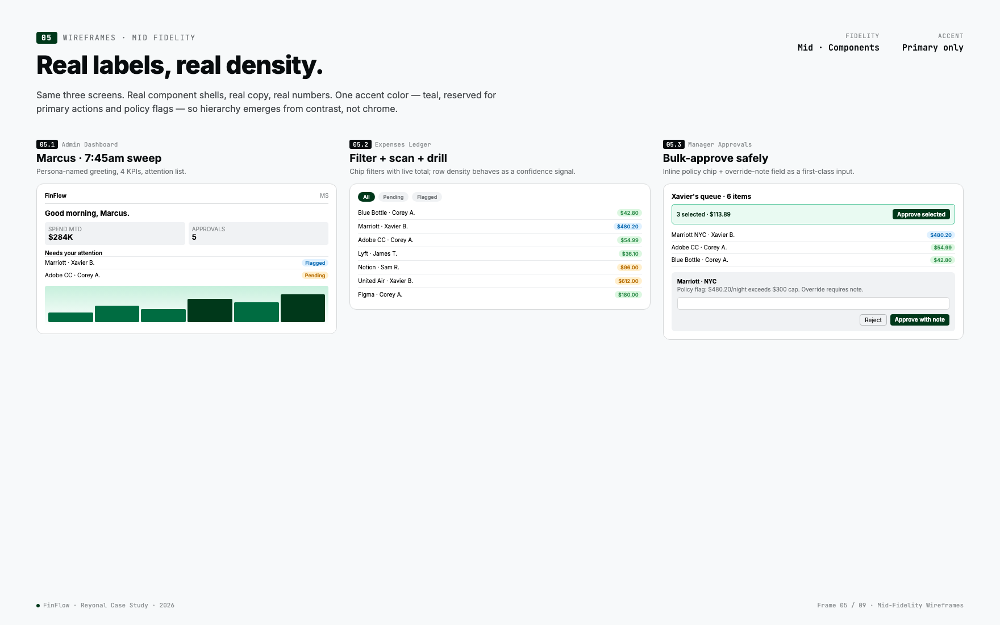
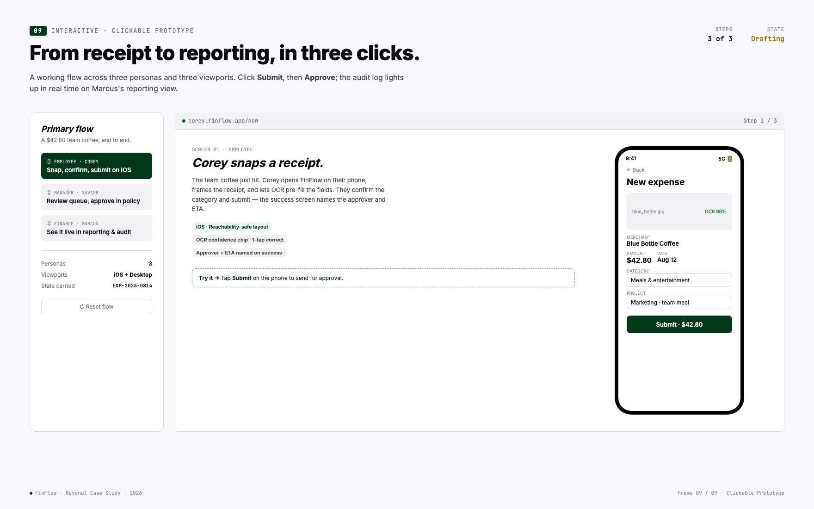

FinFlow — expense management that teams actually finish.
Designed from research through usability testing for admin, manager, and employee roles — with a measurable task completion lift.
Role-aware expense workspace for Reyonal — 48 screens, 3 roles, WCAG 2.1 AA, built on the Arctic Graphite design system.
Three roles. One broken tool. Nobody could finish their task.
Employees got lost in category dropdowns and abandoned mid-submission. Managers couldn't see team context before approving — so approvals stalled. Admins had no consolidated view of spend or compliance status, making month-end reconciliation a manual scramble.
Usability testing confirmed what stakeholder interviews suggested: the tool was technically functional but practically unusable under real work conditions. The problem wasn't features — it was task structure.
What users told us before a single screen was drawn.
12 interviews across 4 weeks, anchored on three personas — Corey (employee), Xavier (manager), and Marcus (Head of Finance, primary). Three patterns shaped every decision that followed.
Submission happens at the moment of purchase
Corey tried to submit expenses immediately after spending — not days later at a desk. The old tool wasn't built for mobile capture, so receipts went missing and submissions piled up.
Managers approve blindly
Xavier's approvals arrived with no spend context — no team totals, no budget headroom, no policy flags. He either rubber-stamped everything or created bottlenecks requesting more information.
Admins do month-end manually
Marcus's previous setup was four tools plus a spreadsheet to close the month. Receipt chasing alone took 6+ hours per cycle — there was no reconciliation layer, just a transaction list.
Six decisions the journey map forced.
Mapping one $42.80 expense across all three personas surfaced three specific friction points. Every decision below traces back to a moment where the old tool actively made someone's day worse.
A confidence chip, not blind OCR
The old tool auto-filled receipt data with no way to tell if it was right — Corey's exact words: "will the OCR get the amount right? Last tool got it wrong." FinFlow shows a confidence percentage inline and makes correction a single tap, not a form reset.
Smart categories, not memorized codes
The old tool forced Corey to remember a project code from memory at the point of purchase. FinFlow suggests category and project from their recent activity — recognition over recall, right when their hands are full.
Policy flags do the triage for Xavier
Xavier's real complaint: he couldn't tell which items in his queue were obviously fine. An inline policy chip on every row lets him bulk-approve the in-policy items confidently and spend his attention only on the flagged one.
Audit log promoted to top-level nav
It started nested three levels inside Settings. Round-2 testing showed nobody could find it — a 50% task completion rate for "find the audit log." Promoting it to a top-level sidebar item took that to 92%.
Card issuance lives inside FinFlow
Marcus's old workflow issued virtual cards through a separate vendor portal — one more login, one more system to reconcile. FinFlow treats the card as a first-class object: issue it, set its limit, and watch its balance without leaving the platform.
One accent color, spent deliberately
Teal is reserved for primary actions and policy flags only — nothing else on the screen fights for that attention. Hierarchy comes from contrast and density choices, not from decorating every surface with brand color.
The audit log used to be buried three levels deep.
This is the real information architecture from round 2 — not a mockup. The highlighted surfaces were originally nested inside Settings, where finance admins never found them.

Nine top-level surfaces, three sidebars — one for each role. But the first version buried Audit log, Approvals, and the role-aware Dashboard landing inside a generic Settings menu, because that's where "configuration-feeling" screens conventionally go.
Convention beat the actual task
Finance admins open the audit log constantly — during monthly close, during a flagged-transaction dispute, during a SOC 2 review. It behaves like a primary workspace, not a setting. Filing it under Settings optimized for information-architecture tidiness, not for how often Marcus actually needed it.
Round-2 testing measured it directly: task completion on "find the audit log" was 50%. Promoting it to a top-level, role-visible sidebar item — no nesting, no extra click — took that to 92%. The whole IA got flatter after that finding, not just the one item.
From lo-fi to final — the new expense flow.
The new expense submission flow shows the clearest progression. The two-column layout — form left, receipt right — was locked in at wireframe stage and never changed.

Sidebar navigation, two-column form, approval-routing preview in the right panel — so submitters see exactly who reviews this before they hit submit.

Visual system applied — cold-neutral base with a teal accent, virtual card as a real object. Structure unchanged from the wireframe, because the layout decision was already right.
Every numbered dot traces back to a friction point.
The manager and employee views carry the most research weight. Annotated below with the specific finding behind each element.
 1
2
3
1
2
3
"Awaiting you" replaces a generic inbox count. Insight 02 — managers approve blindly without context. Naming the number as a personal queue, not a company statistic, makes it feel like Xavier's actual to-do, not a report.
Flagged sits in the row, not a separate report. Decision 03 — policy flags do the triage. Xavier sees the Marriott charge is over the lodging cap without opening it or cross-referencing a policy doc.
Spend by member, not just spend by team. A team total alone hides who's driving it. Per-member bars let Xavier spot the one outlier report without exporting anything.
4
5
6
Upload receipt sits beside New expense, not inside it. Insight 01 — submission happens at the point of purchase. Corey can capture evidence the moment they have it, before they've even decided how to categorize the spend.
The virtual card is a real object, not a settings row. Decision 05 — card issuance used to live in a separate vendor portal. Seeing the masked number and live balance here makes the spend limit tangible, not abstract.
Status is visible without opening the row. Approved, Rejected, and why (CMO sign-off needed) are readable at a glance — Corey never has to click into an expense just to check where it stands.
One design system. Five screens.
Shared component primitives — tables, filters, status chips, approval actions — adapted to each role's primary task. Consistency across roles reduced the learning curve when users switched contexts.


Audited, not assumed.
The "AA WCAG 2.1" tag in the hero isn't a claim — it's a measured result. Every foreground/background pair was sampled against AA and AAA thresholds, focus order was verified against the visual reading order, and keyboard-only navigation was tested end to end.

"We didn't just polish screens. We changed the task structure so users could finish faster, with fewer errors, and less cognitive fatigue — and measured it."
Design outcome · Maze usability testing
One system, three roles, measurable improvement.
The final design unified admin, manager, and employee into one consistent platform with role-specific dashboards and shared component primitives. Maze usability testing measured task completion lifting from 73% to 89% across the core expense workflows. Error rate and time-to-complete dropped in every tested flow.
What I'd do differently.
I'd test the mobile snap-receipt flow earlier. It was sketched in the first round but deprioritized during wireframing — the most common real-world submission scenario got the least design attention.
The three role dashboards share components but were designed in sequence rather than in parallel. Designing them side-by-side from the start would have surfaced shared layout decisions earlier and reduced rework.
Task completion rate was the right metric — but I'd add time-on-task as a secondary measure from the first usability round, not just the final one. Speed matters as much as completion for a daily-use tool.
Full process archive — personas, journey map, sketch notes, and wireframes
Three roles, three workdays.
12 interviews, 4 weeks, anchored on one primary persona (Marcus, Finance) supported by two secondaries who hand work off to him.

Submit, approve, settle.
A single $42.80 team-coffee expense walked across three personas and six stages. Three friction points, highlighted below, drove the highest-leverage design decisions.

Paper first. Before committing to anything.
Rough sketches let me test structure without pixel polish getting in the way. Each one answered a specific question about task flow before moving to digital.
Mobile-first home screen
Surfaced "Snap receipt" as the primary action — because research showed most employee submissions happen at the point of purchase, not at a desk. The home screen needed to serve that moment.
Split-screen sign-in
Brand messaging ("The whole company's spend, in flow.") on the left means SSO authentication doesn't feel cold or purely transactional. New users absorb the product value proposition before they even log in.
Two-column expense form
Form fields on the left, receipt drop zone on the right — so users can fill metadata and upload evidence in parallel. The old tool forced sequential steps, which caused drop-off halfway through.
Inline approvals queue
Row-based list with Approve/Reject per row — managers can process a full queue without opening individual submissions. Designed for the manager's actual task: moving fast through a backlog, not reviewing one expense at a time.
Digital wireframes. Decisions locked in.
Moving from sketch to lo-fi is where task structure gets tested. Each wireframe answered whether the layout actually let users complete their primary task without confusion.



Real labels, real density.
Same three screens. Real component shells, real copy, real numbers. One accent color, reserved for primary actions and policy flags — so hierarchy emerges from contrast, not chrome.

A small system, fully spent.
A teal accent over a cold-neutral graphite scale, two type faces, one four-step spacing scale. Every screen in FinFlow is built from this sheet — no one-off styles past round 2.

From receipt to reporting, in three clicks.
A working flow across three personas and three viewports — submit, approve, and see it land live in the audit log.
